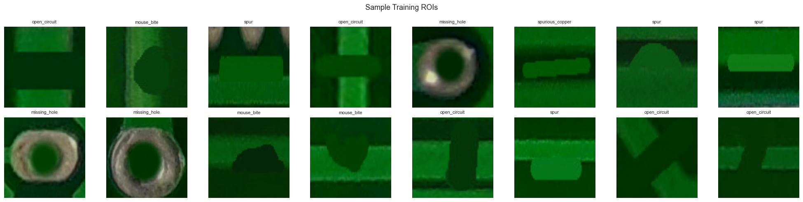
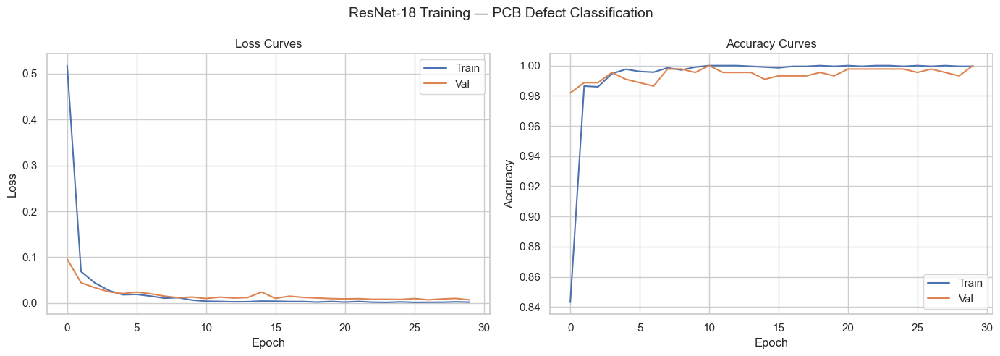
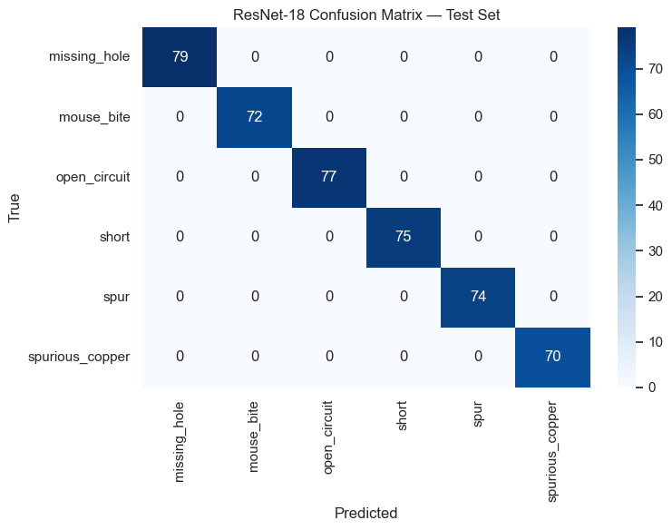
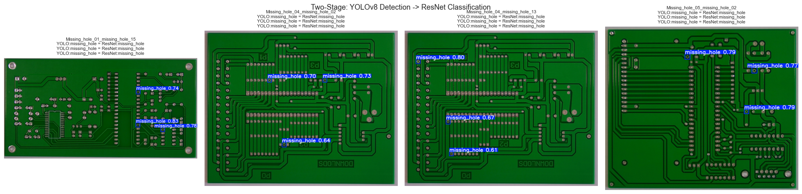

Notebook 04: ResNet Classification on Cropped ROIs#
This notebook implements a two-stage detection pipeline: YOLOv8 detects defect regions → ResNet classifies the cropped patches.
Training vs Inference mismatch (intentional):
Training: ResNet trains on ROIs cropped from ground-truth bounding boxes
Inference: ResNet classifies ROIs from YOLOv8-predicted bboxes
This mirrors real deployment where GT is unavailable
Pipeline:
Crop ROIs from GT bboxes → resize to 224×224
Fine-tune ResNet-18 (ImageNet pretrained) for 6 defect classes
Evaluate classification accuracy on test set
Demo two-stage pipeline: YOLO detection → ResNet classification
Analyze where two-stage adds value vs YOLO alone
import os
import shutil
from pathlib import Path
from collections import Counter
import cv2
import matplotlib.pyplot as plt
import numpy as np
import pandas as pd
import seaborn as sns
import torch
import torch.nn as nn
import torch.optim as optim
from torch.utils.data import DataLoader
from torchvision import datasets, transforms, models
from PIL import Image
from sklearn.metrics import classification_report, confusion_matrix
sns.set_theme(style="whitegrid")
PROJECT_ROOT = Path(".").resolve().parent
DATA_DIR = PROJECT_ROOT / "data"
YOLO_DIR = DATA_DIR / "pcb-yolo"
ROI_DIR = DATA_DIR / "pcb-rois"
MODELS_DIR = PROJECT_ROOT / "models"
MODELS_DIR.mkdir(exist_ok=True)
CLASS_NAMES = {
0: "missing_hole", 1: "mouse_bite", 2: "open_circuit",
3: "short", 4: "spur", 5: "spurious_copper",
}
CLASS_LIST = [CLASS_NAMES[i] for i in range(6)]
device = torch.device("cuda" if torch.cuda.is_available() else "cpu")
print(f"Device: {device}")
Device: cpu
1. Crop ROIs from Ground Truth Bounding Boxes#
For each image in train/val/test, we read the YOLO label file, crop each annotated bounding box region, resize to 224×224, and save to a directory structure compatible with torchvision.datasets.ImageFolder.
def crop_rois(split):
"""Crop ROI patches from a dataset split."""
img_dir = YOLO_DIR / "images" / split
lbl_dir = YOLO_DIR / "labels" / split
counts = Counter()
for img_path in sorted(img_dir.glob("*")):
lbl_path = lbl_dir / (img_path.stem + ".txt")
if not lbl_path.exists():
continue
img = cv2.imread(str(img_path))
if img is None:
continue
h, w = img.shape[:2]
with open(lbl_path, "r") as f:
for idx, line in enumerate(f):
parts = line.strip().split()
if len(parts) != 5:
continue
cls_id = int(parts[0])
xc, yc, bw, bh = float(parts[1]), float(parts[2]), float(parts[3]), float(parts[4])
x1 = max(0, int((xc - bw / 2) * w))
y1 = max(0, int((yc - bh / 2) * h))
x2 = min(w, int((xc + bw / 2) * w))
y2 = min(h, int((yc + bh / 2) * h))
if x2 - x1 < 5 or y2 - y1 < 5:
continue
crop = img[y1:y2, x1:x2]
crop_resized = cv2.resize(crop, (224, 224))
cls_name = CLASS_NAMES[cls_id]
out_dir = ROI_DIR / split / cls_name
out_dir.mkdir(parents=True, exist_ok=True)
out_path = out_dir / f"{img_path.stem}_roi{idx}.jpg"
cv2.imwrite(str(out_path), crop_resized)
counts[cls_name] += 1
return counts
for split in ["train", "val", "test"]:
counts = crop_rois(split)
total = sum(counts.values())
print(f"{split}: {total} ROIs — {dict(counts)}")
train: 2064 ROIs — {'missing_hole': 345, 'mouse_bite': 353, 'open_circuit': 337, 'short': 339, 'spur': 337, 'spurious_copper': 353}
val: 442 ROIs — {'missing_hole': 73, 'mouse_bite': 67, 'open_circuit': 68, 'short': 77, 'spur': 77, 'spurious_copper': 80}
test: 447 ROIs — {'missing_hole': 79, 'mouse_bite': 72, 'open_circuit': 77, 'short': 75, 'spur': 74, 'spurious_copper': 70}
2. Create PyTorch Dataset & DataLoaders#
train_transform = transforms.Compose([
transforms.Resize((224, 224)),
transforms.RandomHorizontalFlip(),
transforms.RandomVerticalFlip(),
transforms.ColorJitter(brightness=0.2, contrast=0.2),
transforms.ToTensor(),
transforms.Normalize(mean=[0.485, 0.456, 0.406], std=[0.229, 0.224, 0.225]),
])
eval_transform = transforms.Compose([
transforms.Resize((224, 224)),
transforms.ToTensor(),
transforms.Normalize(mean=[0.485, 0.456, 0.406], std=[0.229, 0.224, 0.225]),
])
train_dataset = datasets.ImageFolder(str(ROI_DIR / "train"), transform=train_transform)
val_dataset = datasets.ImageFolder(str(ROI_DIR / "val"), transform=eval_transform)
test_dataset = datasets.ImageFolder(str(ROI_DIR / "test"), transform=eval_transform)
train_loader = DataLoader(train_dataset, batch_size=32, shuffle=True, num_workers=2)
val_loader = DataLoader(val_dataset, batch_size=32, shuffle=False, num_workers=2)
test_loader = DataLoader(test_dataset, batch_size=32, shuffle=False, num_workers=2)
print(f"Train: {len(train_dataset)} | Val: {len(val_dataset)} | Test: {len(test_dataset)}")
print(f"Classes: {train_dataset.classes}")
Train: 2064 | Val: 442 | Test: 447
Classes: ['missing_hole', 'mouse_bite', 'open_circuit', 'short', 'spur', 'spurious_copper']
# Visualize a batch of training ROIs
batch_imgs, batch_labels = next(iter(train_loader))
fig, axes = plt.subplots(2, 8, figsize=(20, 5))
mean = np.array([0.485, 0.456, 0.406])
std = np.array([0.229, 0.224, 0.225])
for ax, img, label in zip(axes.flat, batch_imgs[:16], batch_labels[:16]):
img_np = img.permute(1, 2, 0).numpy() * std + mean
img_np = np.clip(img_np, 0, 1)
ax.imshow(img_np)
ax.set_title(train_dataset.classes[label], fontsize=8)
ax.axis("off")
plt.suptitle("Sample Training ROIs", fontsize=13)
plt.tight_layout()
plt.show()

3. Load Pretrained ResNet-18#
We freeze early layers (conv1 through layer3) and only train layer4 + fc for the 6 PCB defect classes.
model = models.resnet18(weights="IMAGENET1K_V1")
for name, param in model.named_parameters():
if "layer4" not in name and "fc" not in name:
param.requires_grad = False
model.fc = nn.Linear(model.fc.in_features, 6)
model = model.to(device)
trainable = sum(p.numel() for p in model.parameters() if p.requires_grad)
total = sum(p.numel() for p in model.parameters())
print(f"Trainable: {trainable:,} / {total:,} parameters ({trainable/total*100:.1f}%)")
Trainable: 8,396,806 / 11,179,590 parameters (75.1%)
4. Training Loop#
30 epochs with CrossEntropyLoss, Adam optimizer (lr=1e-4), and CosineAnnealing scheduler. Best model saved by validation accuracy.
criterion = nn.CrossEntropyLoss()
optimizer = optim.Adam(filter(lambda p: p.requires_grad, model.parameters()), lr=1e-4)
scheduler = optim.lr_scheduler.CosineAnnealingLR(optimizer, T_max=30)
NUM_EPOCHS = 30
best_val_acc = 0.0
history = {"train_loss": [], "train_acc": [], "val_loss": [], "val_acc": []}
for epoch in range(NUM_EPOCHS):
model.train()
train_loss, train_correct, train_total = 0.0, 0, 0
for images, labels in train_loader:
images, labels = images.to(device), labels.to(device)
optimizer.zero_grad()
outputs = model(images)
loss = criterion(outputs, labels)
loss.backward()
optimizer.step()
train_loss += loss.item() * images.size(0)
train_correct += (outputs.argmax(1) == labels).sum().item()
train_total += images.size(0)
model.eval()
val_loss, val_correct, val_total = 0.0, 0, 0
with torch.no_grad():
for images, labels in val_loader:
images, labels = images.to(device), labels.to(device)
outputs = model(images)
loss = criterion(outputs, labels)
val_loss += loss.item() * images.size(0)
val_correct += (outputs.argmax(1) == labels).sum().item()
val_total += images.size(0)
scheduler.step()
train_acc = train_correct / train_total
val_acc = val_correct / val_total
history["train_loss"].append(train_loss / train_total)
history["train_acc"].append(train_acc)
history["val_loss"].append(val_loss / val_total)
history["val_acc"].append(val_acc)
if val_acc > best_val_acc:
best_val_acc = val_acc
torch.save(model.state_dict(), MODELS_DIR / "resnet18_best.pth")
if (epoch + 1) % 5 == 0 or epoch == 0:
print(f"Epoch {epoch+1:3d}/{NUM_EPOCHS} | "
f"Train Loss: {train_loss/train_total:.4f} Acc: {train_acc:.4f} | "
f"Val Loss: {val_loss/val_total:.4f} Acc: {val_acc:.4f}")
print(f"\nBest validation accuracy: {best_val_acc:.4f}")
Epoch 1/30 | Train Loss: 0.5175 Acc: 0.8430 | Val Loss: 0.0960 Acc: 0.9819
Epoch 5/30 | Train Loss: 0.0181 Acc: 0.9976 | Val Loss: 0.0207 Acc: 0.9910
Epoch 10/30 | Train Loss: 0.0064 Acc: 0.9990 | Val Loss: 0.0131 Acc: 0.9955
Epoch 15/30 | Train Loss: 0.0042 Acc: 0.9990 | Val Loss: 0.0239 Acc: 0.9910
Epoch 20/30 | Train Loss: 0.0035 Acc: 0.9995 | Val Loss: 0.0097 Acc: 0.9932
Epoch 25/30 | Train Loss: 0.0025 Acc: 0.9995 | Val Loss: 0.0078 Acc: 0.9977
Epoch 30/30 | Train Loss: 0.0019 Acc: 0.9995 | Val Loss: 0.0067 Acc: 1.0000
Best validation accuracy: 1.0000
# Plot training curves
fig, axes = plt.subplots(1, 2, figsize=(14, 5))
axes[0].plot(history["train_loss"], label="Train")
axes[0].plot(history["val_loss"], label="Val")
axes[0].set_xlabel("Epoch"); axes[0].set_ylabel("Loss")
axes[0].set_title("Loss Curves"); axes[0].legend()
axes[1].plot(history["train_acc"], label="Train")
axes[1].plot(history["val_acc"], label="Val")
axes[1].set_xlabel("Epoch"); axes[1].set_ylabel("Accuracy")
axes[1].set_title("Accuracy Curves"); axes[1].legend()
plt.suptitle("ResNet-18 Training — PCB Defect Classification", fontsize=14)
plt.tight_layout()
plt.show()

5. Test Set Evaluation#
model.load_state_dict(torch.load(MODELS_DIR / "resnet18_best.pth", map_location=device))
model.eval()
all_preds, all_labels = [], []
with torch.no_grad():
for images, labels in test_loader:
images = images.to(device)
outputs = model(images)
all_preds.extend(outputs.argmax(1).cpu().numpy())
all_labels.extend(labels.numpy())
all_preds = np.array(all_preds)
all_labels = np.array(all_labels)
print("=== Test Set Classification Report ===")
print(classification_report(all_labels, all_preds, target_names=CLASS_LIST))
cm = confusion_matrix(all_labels, all_preds)
fig, ax = plt.subplots(figsize=(8, 6))
sns.heatmap(cm, annot=True, fmt="d", cmap="Blues",
xticklabels=CLASS_LIST, yticklabels=CLASS_LIST, ax=ax)
ax.set_xlabel("Predicted"); ax.set_ylabel("True")
ax.set_title("ResNet-18 Confusion Matrix — Test Set")
plt.tight_layout()
plt.show()
=== Test Set Classification Report ===
precision recall f1-score support
missing_hole 1.00 1.00 1.00 79
mouse_bite 1.00 1.00 1.00 72
open_circuit 1.00 1.00 1.00 77
short 1.00 1.00 1.00 75
spur 1.00 1.00 1.00 74
spurious_copper 1.00 1.00 1.00 70
accuracy 1.00 447
macro avg 1.00 1.00 1.00 447
weighted avg 1.00 1.00 1.00 447

6. Two-Stage Pipeline Demo#
Run the full pipeline: YOLOv8 detects bounding boxes → crop detections → ResNet classifies each crop. Compare YOLO’s class prediction with ResNet’s classification.
from ultralytics import YOLO
yolo_path = MODELS_DIR / "yolov8_best.pt"
test_img_dir = YOLO_DIR / "images" / "test"
def classify_crop(crop_bgr, resnet_model, transform, dev):
crop_rgb = cv2.cvtColor(crop_bgr, cv2.COLOR_BGR2RGB)
pil_img = Image.fromarray(crop_rgb)
tensor = transform(pil_img).unsqueeze(0).to(dev)
with torch.no_grad():
output = resnet_model(tensor)
probs = torch.softmax(output, dim=1)[0]
pred_id = probs.argmax().item()
return CLASS_LIST[pred_id], probs[pred_id].item()
if yolo_path.exists():
yolo_model = YOLO(str(yolo_path))
test_images = sorted(test_img_dir.glob("*"))[:4]
fig, axes = plt.subplots(1, len(test_images), figsize=(5 * len(test_images), 5))
if len(test_images) == 1: axes = [axes]
for ax, img_path in zip(axes, test_images):
img = cv2.imread(str(img_path))
results = yolo_model.predict(img, verbose=False)
annotated = cv2.cvtColor(results[0].plot(), cv2.COLOR_BGR2RGB)
ax.imshow(annotated)
title_lines = [img_path.stem]
for box in results[0].boxes:
x1, y1, x2, y2 = [int(v) for v in box.xyxy[0].cpu().numpy()]
yolo_cls = CLASS_NAMES[int(box.cls[0])]
crop = img[max(0,y1):y2, max(0,x1):x2]
if crop.size == 0: continue
resnet_cls, conf = classify_crop(crop, model, eval_transform, device)
match = "=" if yolo_cls == resnet_cls else "!="
title_lines.append(f"YOLO:{yolo_cls} {match} ResNet:{resnet_cls}")
ax.set_title("\n".join(title_lines), fontsize=8)
ax.axis("off")
plt.suptitle("Two-Stage: YOLOv8 Detection -> ResNet Classification", fontsize=13)
plt.tight_layout()
plt.show()
else:
print("YOLOv8 model not found — run Notebook 03 first")

7. Analysis#
Where does two-stage add value?#
YOLO misclassifies the defect type but correctly localizes it — ResNet can correct the class
Visually similar defects (spur vs spurious_copper) where a dedicated classifier excels
High-stakes decisions where a second opinion reduces false negatives
When is YOLO-only sufficient?#
When per-class AP is already high across all classes
When inference speed is critical (two-stage adds latency)
When defect classes are visually distinct
# Quantify agreement rate on full test set
if yolo_path.exists():
per_class_agree = Counter()
per_class_total = Counter()
for img_path in sorted(test_img_dir.glob("*")):
img = cv2.imread(str(img_path))
if img is None: continue
results = yolo_model.predict(img, verbose=False)
for box in results[0].boxes:
x1, y1, x2, y2 = [int(v) for v in box.xyxy[0].cpu().numpy()]
yolo_cls = CLASS_NAMES[int(box.cls[0])]
crop = img[max(0,y1):y2, max(0,x1):x2]
if crop.size == 0: continue
resnet_cls, _ = classify_crop(crop, model, eval_transform, device)
per_class_total[yolo_cls] += 1
if yolo_cls == resnet_cls:
per_class_agree[yolo_cls] += 1
print("Per-class YOLO<->ResNet agreement rate:")
total_agree, total_count = 0, 0
for cls in CLASS_LIST:
n = per_class_total[cls]
a = per_class_agree[cls]
rate = a / n * 100 if n > 0 else 0
print(f" {cls:20s}: {a}/{n} ({rate:.1f}%)")
total_agree += a
total_count += n
print(f" {'OVERALL':20s}: {total_agree}/{total_count} ({total_agree/max(total_count,1)*100:.1f}%)")
else:
print("YOLOv8 model not found")
Per-class YOLO<->ResNet agreement rate:
missing_hole : 86/86 (100.0%)
mouse_bite : 65/69 (94.2%)
open_circuit : 81/84 (96.4%)
short : 82/83 (98.8%)
spur : 47/47 (100.0%)
spurious_copper : 57/57 (100.0%)
OVERALL : 418/426 (98.1%)